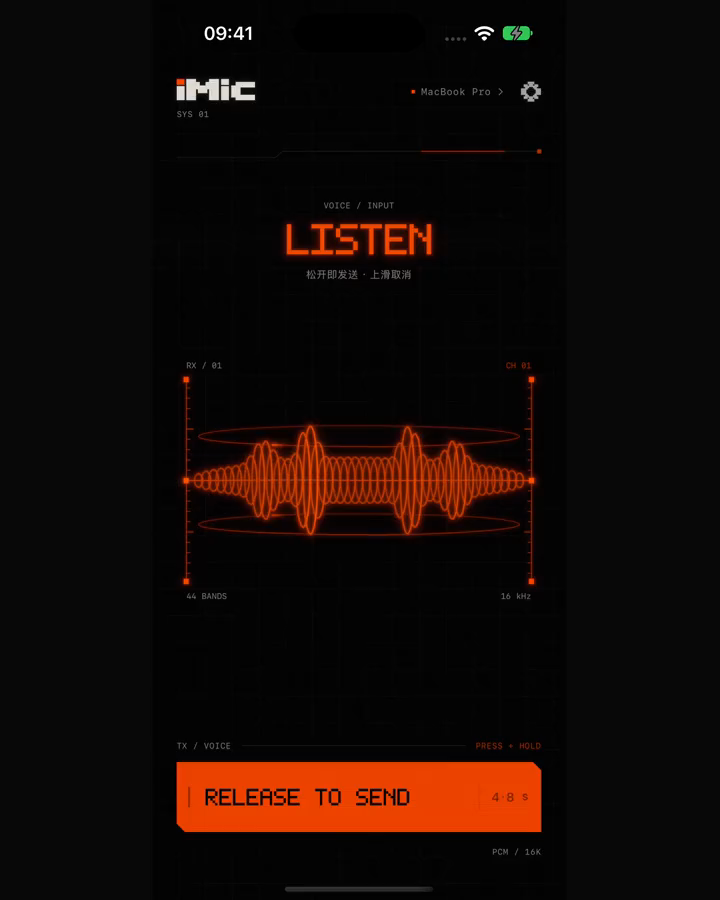
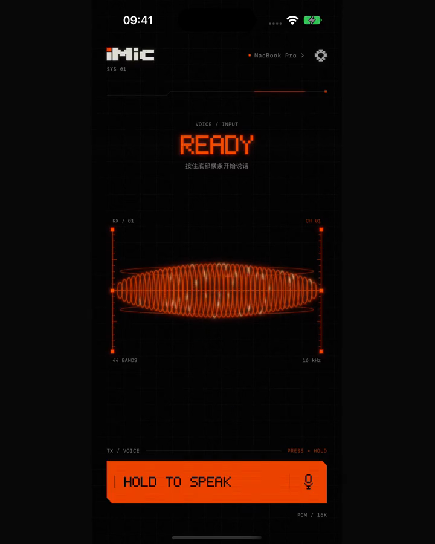
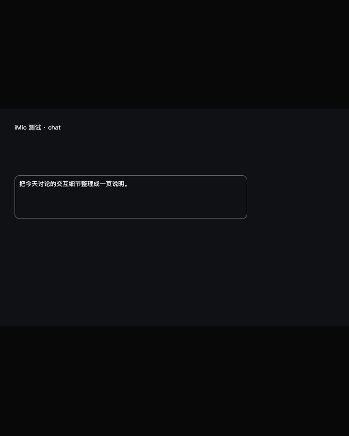

01 / 05
按住说话，松手发射。
按住底部横条，荧光波形随声音起伏。松开，文字落到 Mac 当前输入处，短促的 8-bit 音效给你回应。

IPHONE → MAC
iPhone 当 Mac 的麦克风。
说完松手，文字直接打进
你正在用的任何应用。
macOS 13+ · iOS 17+
需要你自己的阿里云百炼 API Key

一根弦，一次按住。让手指和声音，接上你的工作节奏。
按住底部横条，荧光波形随声音起伏。松开，文字落到 Mac 当前输入处，短促的 8-bit 音效给你回应。

下拉松手，弦回弹过中线时发送回车；上拨删一字，保持上拉加速连删；左右滑动移动光标。继续拉到顶部可请求清空，Mac 核验成功才算完成。
清空在无法核验的编辑器或终端中会被拒绝。短片展示弦上的文字与发射效果，完整编辑手势请在 App 中体验。

开启实时预览，临时文字开始进入 Mac 输入框，最终识别再修订本轮内容。你手动按键、点击或切换应用，本轮自动修订就会停止。
部分应用使用键盘兼容模式，无法独立验证应用改稿或丢键，可能重复或误删；无法监视用户接管且无法核验范围时，只输入最终结果。画面为测试页交互示意。

AI 润色完成时，一道光沿着文字扫过输入框，再随新文字收尾。扫光是可关闭的测试功能，需要 macOS 14+；部分定位方式需要屏幕录制权限。

录音、松手、回车，各有短促、克制的芯片音。喜欢安静？在声音设置里关掉就好。

一个百炼 Key，识别和润色都能用。口语整理成书面文字，也可以换个说法。
以下均为手写示例，展示模式风格，不代表每次生成的结果。支持中文、英文、日文、韩文输出。
帮我把今天讨论的交互细节整理一下，整理成一页说明。
↓把今天讨论的交互细节整理成一页说明。
列出当前目录，包括隐藏文件。
↓ls -la
今天有点累，明天再继续吧。
↓今日稍倦，明日再续。
这件事我们明天再说。
↓这件事，就留到明天，明天再说。
这个办法真的不错。
↓噢，老伙计，这个办法可真不错。
终端命令模式只输出单行命令，不会自动执行。可选百炼、DeepSeek 官方或自定义兼容服务；服务、Key 与模型在 Mac 设置。
任何能打字的 Mac 应用，都可以试试 iMic。以下应用已有测试覆盖，具体输入与扫光能力取决于目标应用。
切换了应用？文字先留住。录音时记录目标应用，识别结束时若前台变化，就不自动输入，保留结果供你复制。
终端里，多行变一行。换行会被替换成空格，多行结果不会被逐行执行。命令是否运行，由你按下回车决定。
iMic 没有用于接收录音、识别文字或服务 Key 的自建服务器。
优先局域网直连，逐帧 AES-GCM 加密；同一 Wi-Fi 不可用时，可开启蓝牙兜底，速度取决于设备与环境。
应用内填写的 Key 保存于 Mac 的 ~/Library/Application Support/iMic/credentials.json，文件权限 0600。也支持自行通过环境变量提供。
Mac 直接把音频发给百炼。开启润色时，文字发给选定服务；iPhone 的 Apple Speech 临时预览也可能使用 Apple 在线服务。
本站不追踪、无统计、无 Cookie。App 的服务商数据处理规则以其条款和账号设置为准。完整隐私说明 ↗
下载 iMic，拖进「应用程序」并打开。按向导填入百炼 API Key，再开启辅助功能权限。
如何获取百炼 API Key？ ↗通过 TestFlight 安装 iMic，打开后按引导操作。公开测试的开放状态请查看下方下载区。
两端连到同一 Wi-Fi，在 iPhone 选择自己的 Mac，输入 Mac 显示的 6 位配对码。完成。
留在菜单栏，随时接住你的话。
下载 iMic for MacMac 版需要在 Mac 上下载。仍然直接下载 ↗
iMic 官网下载链接已通过 Apple 公证，下载后可直接打开。
校验：SHA256SUMS.txt · 所有版本 ↗
把手机，变成一件趁手的输入乐器。
通过 TestFlight 安装 ↗高级用户也可以在「所有版本」中下载 IPA，自行签名安装。
在阿里云百炼控制台创建 API Key，按 Mac 向导填写。识别与润色按量计费，具体价格、额度和服务地域以阿里云官网及账号设置为准。
推荐同一 Wi-Fi，并允许本地网络访问。访客或公司网络可能禁止设备互访；不行时可在 Mac 设置开启蓝牙兜底，速度可能较慢，长录音需要等待补传。
已有测试覆盖 TextEdit、Safari、Chrome、Terminal、Cursor、Zed、iTerm、Otty。输入与扫光能力因应用而异，无法核验的输入框可能只接收最终结果，清空也可能被拒绝。
会发送到你使用的服务商：Mac 将音频发往百炼；启用润色会把识别文字发往选定服务。iPhone 的 Apple Speech 临时预览可能使用 Apple 在线服务。iMic 没有接收这些数据的自建服务器。详见隐私说明。
用来向你选定的前台应用输入文字和编辑按键。由你在系统设置中授权或撤销，iMic 不会修改系统权限设置。
GitHub 在部分网络下可能较慢，可以稍后重试，或到所有版本手动下载。
发邮件至 i0.0ia@qq.com，或提交 GitHub Issue。请附版本和复现步骤，公开反馈中不要包含 API Key、配对令牌或私人录音。